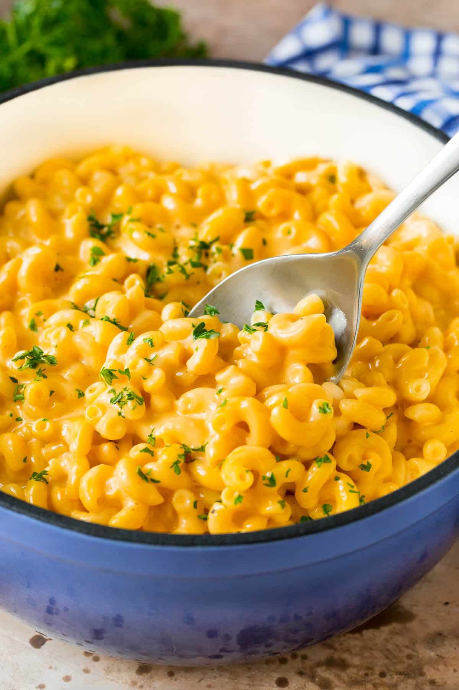

Simple stovetop Mac & Cheese

Description:
Quick, easy, and tasty macaroni and cheese dish. Fancy, designer mac and cheese often costs forty or fifty dollars to prepare when you have so many expensive cheeses, but they aren't always the best tasting. This simple recipe is cheap and tasty.
Ingredients:
- 1 (8 ounce) box elbow macaroni
- ¼ cup butter
- ¼ cup all-purpose flour
- ½ teaspoon salt
- ground black pepper to taste
- 2 cups milk
- 2 cups shredded Cheddar cheese
Steps:
- Cook the macaroni.
- Make the roux.
- Stir in shredded Cheddar until melted.
- Drain macaroni and fold into cheese sauce until coated.
- Serve hot and enjoy!